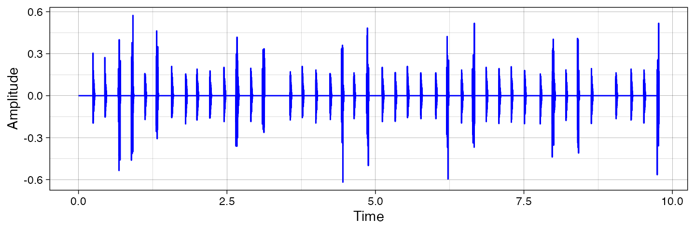

Synthesise onsets
synthesise_onsets.RmdTo create an audio file of your onset data, you can call
synthesise_onsets function.
Example data
Load a Cuban salsa example.
Let’s take a 10 second example. To eliminate the first 5 seconds where the instruments are not playing, let’s redefine the time to start from the first annotated cycle (Isochronous.SD.Time).
Synthesise two instruments
Let’s take two instruments and create their onsets as high-pitched sound (Guitar) and short noise burst (Bass).
inst <- c('Guitar','Bass')
fs <- 22050
w <- synthesise_onsets(data = data,
instruments = inst,
sr = fs,
type =c('synth','noise'))Plot the signal
This is downsampled for plotting in ggplot2.
scaling <- 20
ws <- signal::resample(w,fs,fs*scaling)
tmp <- data.frame(Amplitude=ws,Time=seq(0,length(ws)-1))
tmp$Time <- tmp$Time/fs*scaling
ggplot2::ggplot(tmp,ggplot2::aes(x=Time,y=Amplitude))+
ggplot2::geom_line(color='blue')+
ggplot2::theme_linedraw()
Save as wave file using seewave library.
seewave::savewav(wave = w, f = fs, channel = 1, filename = 'example.wav')Further options relate to sound generators and frequency.